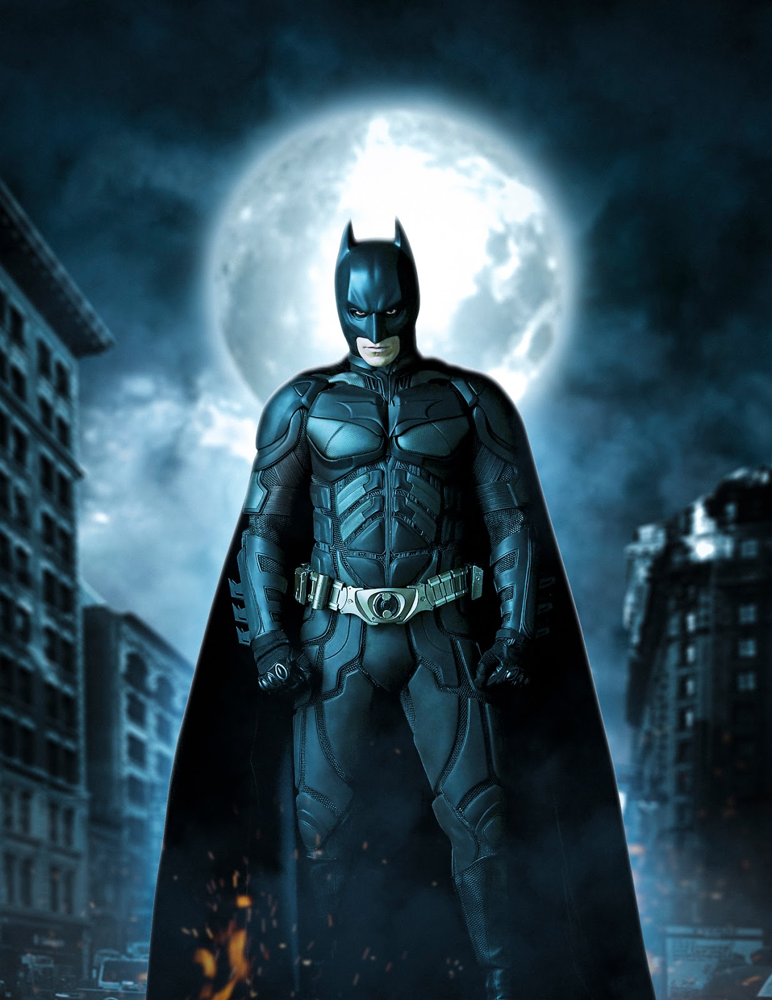
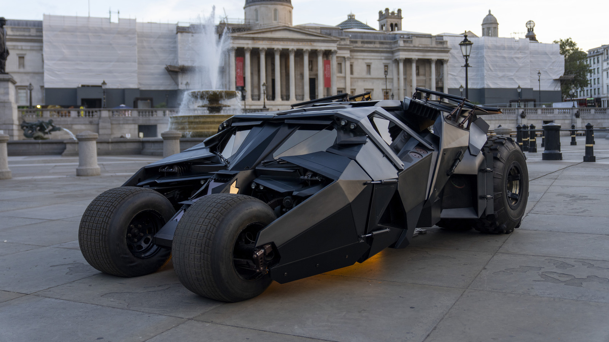
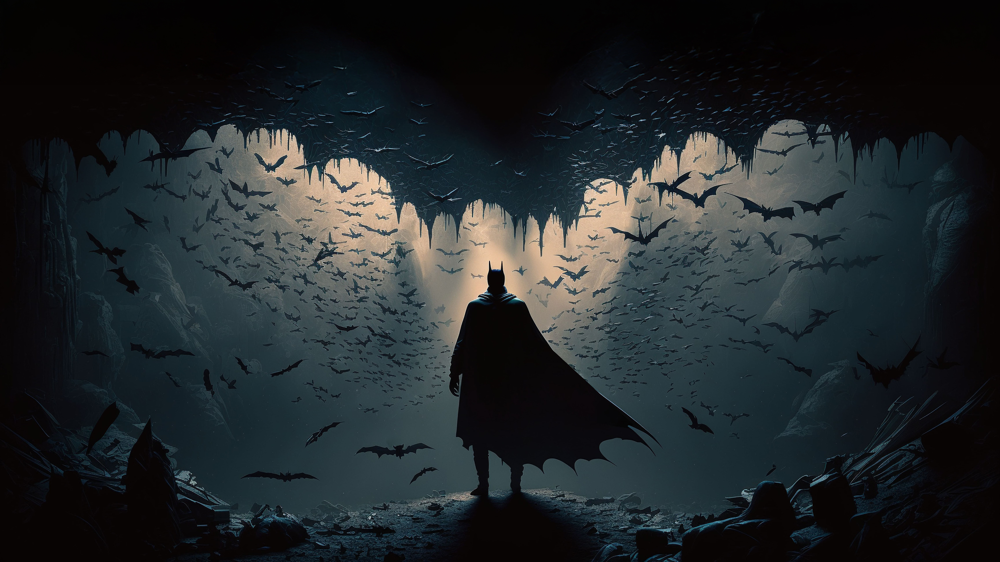

The Dark Knight
1. No Superpowers — Just Brains and Grit
Unlike most superheroes, Batman doesn’t rely on super strength or alien powers. He uses his intelligence, strategy, and dedication to protect Gotham City. That makes him more relatable and impressive.
2. The Best Gadgets in the Game
Batman has a utility belt full of creative tools and high-tech gear. From grappling hooks to the Batmobile, his gadgets make him one of the most dangerous heroes — even to villains with powers.
3. A Powerful Origin Story
Batman’s story begins with tragedy — the loss of his parents. Instead of letting that break him, he uses it as fuel to fight crime. His story inspires strength, resilience, and justice.
4. Fear as a Weapon
Batman turns fear against criminals. He doesn’t just fight them — he makes them afraid to even step into the night. That’s what sets him apart from many other heroes.
